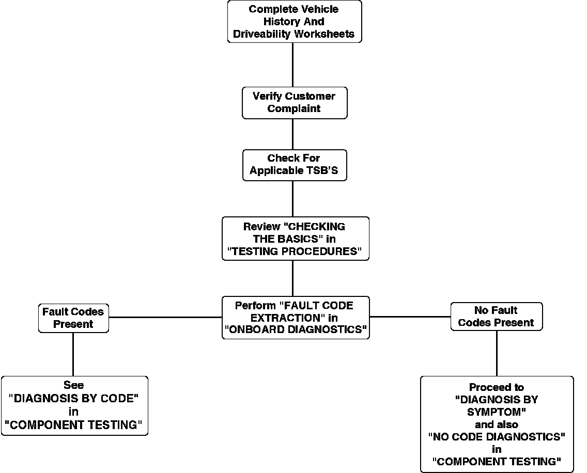
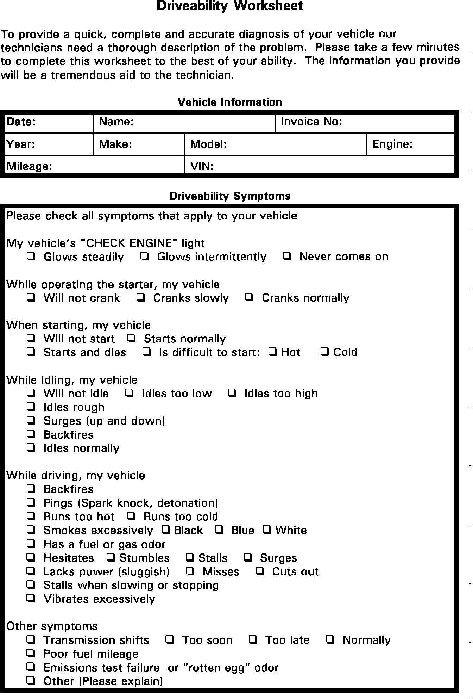
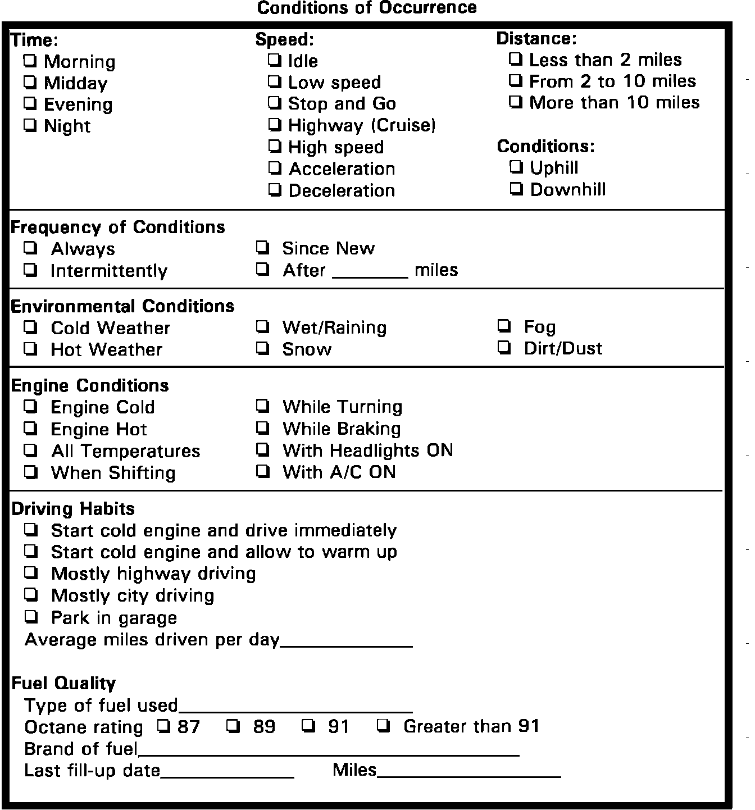
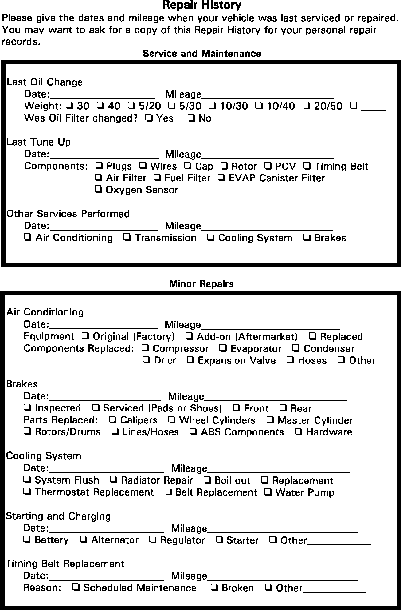

Flow of Diagnosis
Flow Of Diagnosis:

FLOW OF DIAGNOSIS
Driveability Worksheet (Part 1 Of 2):

Driveability Worksheet (Part 2 Of 2):

DRIVEABILITY WORKSHEETS
Repair History (Part 1 Of 2):

Repair History (Part 2 Of 2):

VEHICLE REPAIR HISTORY WORKSHEETS
1. Utilize the VEHICLE REPAIR HISTORY and DRIVEABILITY WORKSHEETS in this section to provide better communication between the customer and the mechanic.
2. Always verify the customer complaint. You must know the problem if you are to diagnose it.
3. Check any Technical Service Bulletins that may apply to the vehicle being serviced.
4. Review CHECKING THE BASICS. These items should be inspected and corrected for a complete and accurate diagnosis.
5. The On-Board Diagnostics will verify that the ECU sensors and circuits are functioning properly, or display any trouble codes that may be stored in the computer memory. The procedures for extracting and clearing trouble codes are in ON-BOARD DIAGNOSTICS.
6. This list of symptoms and their possible causes is used to aid in diagnosing intermittent problems or failures which do not store trouble codes in the computer memory. DIAGNOSIS BY SYMPTOM is located under TESTING PROCEDURES.
7. When referred by either the Diagnostic Code Charts or Diagnosis by Symptom, go to COMPONENT TESTING for complete circuit and component testing procedures.